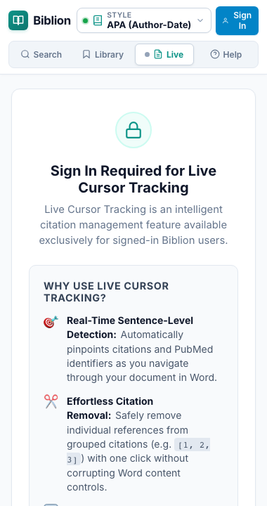

#Live References: See the Citations Under Your Cursor
Product: Biblion Citation Assistant
Audience: Academic Researchers, Scientists & Medical Writers
Available in: Microsoft Word only
Maintained by: Documentation Writer
#1. What It Does
Live References watches where your cursor is in your Word manuscript. Whenever you click into or type in a sentence, Biblion shows the references behind that sentence in the Biblion taskpane. There is no need to scroll to the bibliography to check what a citation points to.

#2. Why It Matters
- Verify claims quickly while editing: see the title, authors, journal and abstract link for the paper cited in the sentence you are reading.
- Catch loose references: Biblion also recognises PMIDs and DOIs you typed as plain text and offers to turn them into managed citations.
- Stay oriented in long documents: the active sentence is highlighted in the taskpane so you always know which sentence the references belong to.
#3. How to Use It
- Open your manuscript in Microsoft Word and open the Biblion taskpane.
- Click the Live References tab. This tab appears only inside Word.
- Click or type anywhere in your document. After a brief pause (about a third of a second), the tab updates.
- Read the reference cards for the sentence you are in. The sentence is highlighted.
#What the badges mean
| Badge | Meaning |
|---|---|
| Biblion Control | A citation inserted by Biblion (a Word content control). Fully managed: it renumbers and reformats with your style. |
| Detected in Text (PMID) | You typed something like PMID: 28453412. Biblion looked the article up for you. |
| Detected in Text (DOI) | Biblion found a DOI such as 10.1038/171737a0 in the sentence. |
For plain-text detections, click Convert to Citation Control to turn it into a managed citation.
#Empty paragraphs
If your cursor is in a blank paragraph, the tab shows No citations found at current cursor position. This is normal.
#4. Smart Sentence Detection
Scientific writing is full of dots that are not the end of a sentence. Biblion understands common cases, so a sentence is not split wrongly at:
et al.,e.g.,i.e.,Fig.,Refs.,vs.,Dr.,Prof.,vol.,pp.- author initials such as
Watson, J. D. - decimals such as
4.5%orp < 0.05
Example: in "According to Smith et al. the rate was 4.5% in the first cohort. However, Jones et al. disputed this." Biblion correctly treats the first half as one sentence.
#5. Good to Know
- Live References works only inside Microsoft Word. In a normal browser the tab is hidden. See Using Biblion in a Web Browser.
- It reads your document to find citations; it does not change your text unless you click Convert to Citation Control.